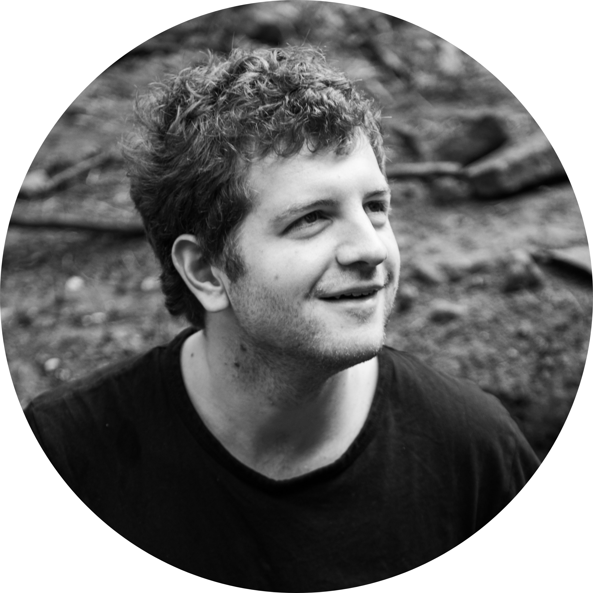

Doctor in Archaeological Sciences
I am an archaeologist and geographer, primarily interested in archaeological sciences under theoretical and methodological aspects. My curents researches are on the applications of geosciences to answer archaeological questions with a focus on multi-scalar approaches. I am using either statistical and modern machine learning approaches or more traditional geoarchaeological proxies (e.g. micromorphology, pedology, stratigraphy) to depict past environement humans interactions. My research areas are located mainly in Southwestern Asia (Iraq, Southern Caucasus, Saudi-Arabia).